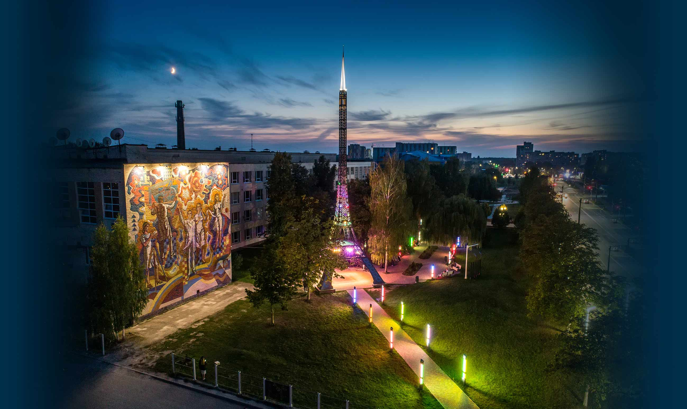

Логотип нашого університету
Логотип має дуже важливе значення, оскільки він є обличчям бренду і допомагає створити перше враження про компанію чи продукт. Добре розроблений логотип не лише привертає увагу, але й викликає довіру, впізнаваність та асоціації з основними цінностями чи ідеями, які стоять за брендом.

Житомирська політехніка — єдиний цивільний заклад освіти інженерно-технологічного профілю на Житомирщині. Університет було створено на підставі Наказу Міністерства вищої і середньої спеціальної освіти УРСР від 11.03.1960 р. № 84 і Наказу Київського політехнічного інституту (КПІ) від 24.11.1960 р. № 194 шляхом створення загальнотехнічного факультету (ЗТФ КПІ). Студенти, що працювали на підприємствах, повинні були навчатися на факультеті протягом трьох років, після чого мали можливість закінчити навчання в інших закладах вищої освіти України та колишнього Радянського Союзу. 1 вересня 1960 року приступили до занять перші 175 студентів. За нещодавно прийнятою офіційною версією університет вважає себе правонаступником Волинського політехнікуму, заснованого у 1920 році, однак ця версія піддається сумнівам. За 33 роки філіал підготував для народного господарства країни майже 5 тисяч інженерів-механіків та інженерів-електриків, більше 3 тисяч студентів-заочників пройшли в філіалі загальнотехнічну підготовку. «Житомирська політехніка» в рейтингу «Топ-200 Україна» зайняла 53 місце, а серед «Кращих ЗВО північного регіону України» — 2 місце. Серед кращих закладів освіти Житомира «Житомирська політехніка» в 2022 році посіла перше місце.